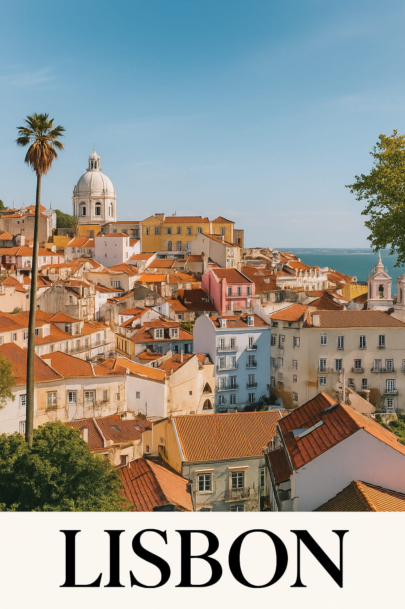
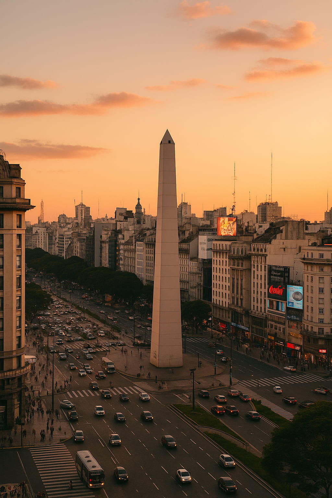
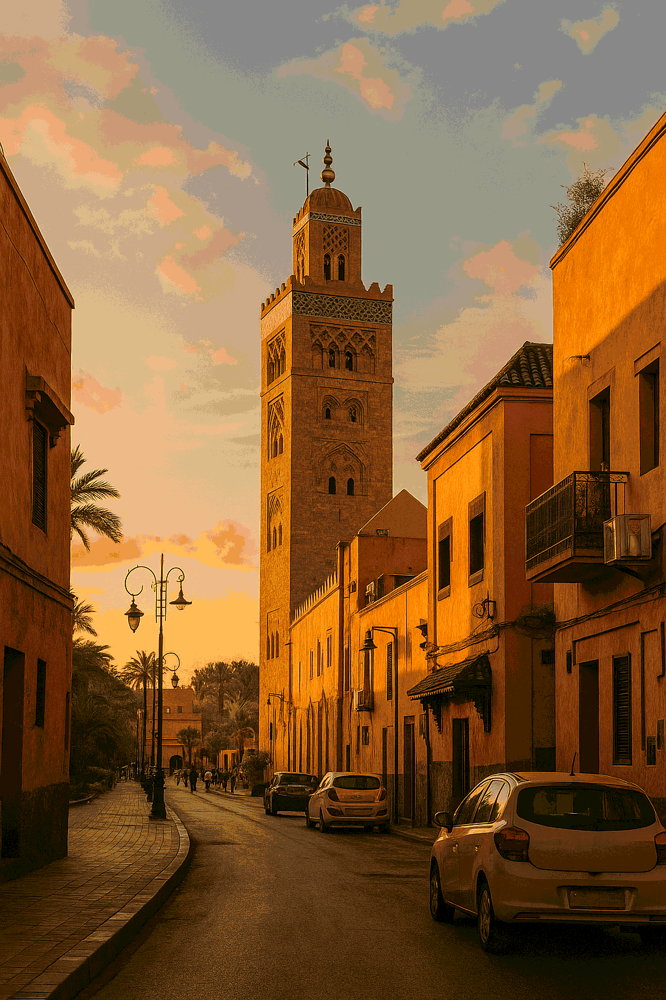
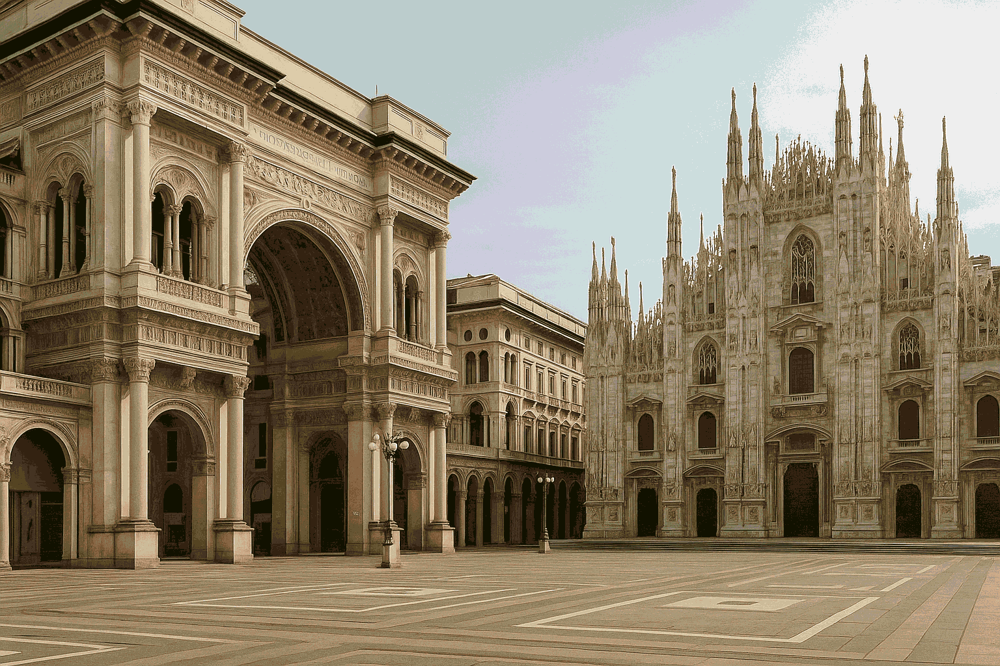

10 Destinations Where Style and Travel Collide in 2025
In a world where borders blur and style speaks louder than ever, travel is no longer just about visiting — it's about being seen, expressing identity, and merging with a city’s rhythm. Here are 10 global destinations where fashion, culture, and visual storytelling collide beautifully in 2025.
1. Tokyo – Layers, Light and Shibuya Nights
Tokyo in 2025 is a palette of precision and experimentation. In Harajuku, oversized tailoring blends with genderless streetwear. Meanwhile, the neon-soaked alleys of Shibuya showcase Tokyo’s love affair with movement, music, and monochrome layering.
Style in Tokyo is about personal freedom wrapped in poetic contrast — silence in chaos.
2. Paris – Understated Chic with Historic Edge
In Paris, you don’t chase fashion — you become it. The city glows with effortless layers: beige trenches, ballet flats, minimal jewelry. Le Marais and Saint-Germain are playgrounds for photographers, muses, and vintage gold seekers.
3. Mexico City – Color, Craft, and Cultural Cool
CDMX mixes artisan textures with new-school aesthetics. Think embroidered bags on mesh dresses, hand-painted nails at tianguis markets, and creative layering under the sun. Roma Norte feels like a moving mural of expression.
4. Seoul – Futurist Minimalism with a Street Punch
Seoul is a master of controlled boldness. In 2025, clean silhouettes dominate — punctuated by neon sneakers, metal bags, and digital fabrics. Garosugil is still the place to spot modern royalty of fashion rebellion.
5. Milan – Tailored Romance and Espresso Energy
Milan remains the capital of power fashion. This year, we're seeing nude tones with glossy leather, massive sunglasses with structured linen, and energy that moves between fashion house and café seat.
Every coffee in Milan is a runway moment waiting to happen.
6. New York – Chaos Refined, Always Unapologetic
In NYC, spring brings sneakers with silk skirts, vintage Ralph with bodega bags. Downtown cool remains, but now there’s a new softness — a kind of vulnerability in edge. From Brooklyn to Soho, self-expression runs hot.
7. Marrakech – Texture, Spice and Golden Glow
Nothing photographs like Marrakech. From terracotta walls to handcrafted slippers, this city inspires sun-drenched maximalism. Kaftans and bangles, sandals and smoky eyes — it’s a destination made for visual drama.
8. Buenos Aires – Retro Femininity and Subtle Rebellion
The fashion scene here is poetic and rebellious. Ruffles return, corsets over tees, and dancers in plazas wear denim jackets like declarations. Buenos Aires brings both melancholy and momentum.
9. Lisbon – Atlantic Breeze Meets Art School Cool
Lisbon 2025 is ceramic blue and linen white. Bucket hats meet platform sandals, and flowy pants follow tram lines through Alfama. Young designers reinterpret Fado aesthetics into wearable minimalism with soul.
10. London – Bold Statements in Timeless Framework
From Notting Hill to Shoreditch, London reclaims its edge. Bold red coats, plaid suits, Doc Martens, experimental eyewear. In 2025, this city leans deeper into anti-polish and celebrates the beauty of bold contrast.
Travel is no longer just a movement — it's a mirror of who we are and what we choose to wear along the way. In these 10 cities, your style isn’t just welcome — it becomes part of the landscape.